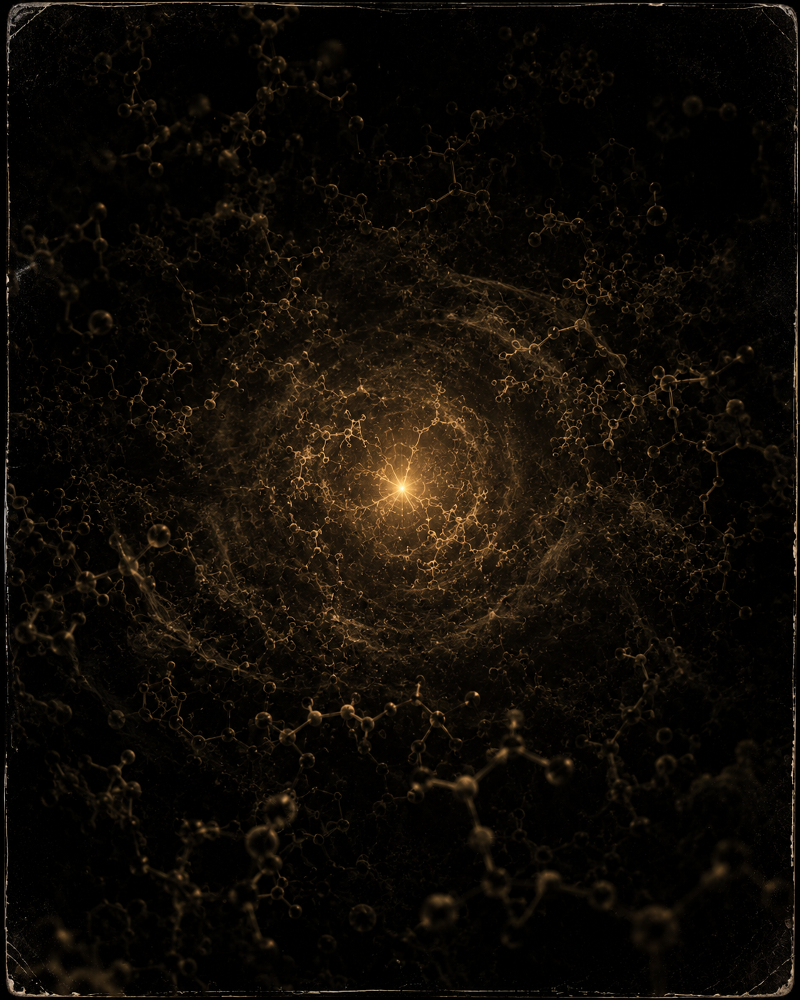

Stand anywhere on Earth and you are surrounded by life. Bacteria coat your skin. Fungi thread the soil under your feet. The air you’d call sterile is thick with microbes. Life saturates this planet so completely that finding a truly lifeless square centimeter takes real effort. And yet, for all that abundance, every last bit of it — every cell, every blade of grass, every blue whale — runs on the same blueprint. The same genetic code. The same handedness in its amino acids. The same underlying chemistry.
We are not the product of many experiments. We are iterations of a single one.
That is a stranger fact than it first sounds. Life on Earth appears to have emerged exactly once, somewhere between 3.5 and 4 billion years ago, and everything since has been variation on that one theme. There is no evidence of a second genesis — no shadow biosphere running on different rules, no unrelated tree of life growing quietly beside our own. Every organism that has ever lived is a cousin, in the deepest sense the word allows. We are all descended from the same chemical accident that happened, once, to learn how to copy itself.
Which raises a question most of us would rather not sit with: what if that accident was genuinely unlikely?
The numbers game
The reflexive answer is that it can’t matter. The observable universe holds something like 10²⁴ stars. Many have planets. A real fraction of those planets sit in the zone where liquid water can exist. Across billions of years and that many worlds, life elsewhere feels not just possible but inevitable. The universe has had an obscene number of chances to roll the dice.
But that intuition quietly assumes the odds are merely long, not astronomical. And those are different things. If the jump from complex chemistry to a self-replicating, evolving system demands a precise enough convergence — a specific enough sequence of molecular events, in a specific enough environment — then even 10²⁴ tries might not be enough to expect it twice. Big numbers only guarantee an outcome when they’re big relative to the odds against it. We don’t know that they are. We have exactly one data point, and it’s the one we’d have regardless.
Here is the distinction that the raw star count papers over.
Chemistry is everywhere. That part is settled. Organic molecules drift in interstellar clouds, amino acids arrive intact on meteorites, complex carbon compounds form in the atmospheres of worlds we’ll never touch. The raw materials of life are cheap and common and scattered across the whole cosmos. If life were a matter of assembling the right ingredients, it would be everywhere too.
But chemistry is not life. A pile of the right molecules is not a system that metabolizes, reproduces, and evolves, any more than a pile of bricks is a cathedral. Somewhere between the two lies a threshold — the moment inert chemistry becomes something that stays lit, that copies itself with enough fidelity to be shaped by selection. That threshold is what happened once on Earth. And nothing we know says it happens easily, or often, or ever again.
So the rarity, if it exists, is not in the material. It is in the spark.

The weight of once
We tend to treat “are we alone” as a question about ingredients and real estate — enough planets, enough water, enough time. But the single blueprint under our feet points somewhere else. If the ingredients are universal and the spark is rare, then a galaxy full of habitable, well-stocked, patiently waiting worlds tells us almost nothing. They can have every raw material and still be silent, because the hard part was never the materials. The hard part was the one improbable transition that no amount of stocked shelves can force.
And if that’s true, then the abundance around us is not evidence of a fertile universe. It’s the opposite. It’s what a single success looks like from the inside — a lone spark that caught, then filled every crack of its one small world so thoroughly that its inhabitants mistake saturation for likelihood. We look at how much life there is here and assume the universe must be teeming. But we’re not counting geneses. We’re counting the descendants of one.
I don’t know that life only happened once. Nobody does — that’s the honest center of the whole question. It’s possible the spark is easy and the sky is crowded. But it is also possible, fully consistent with everything we can see, that the transition from chemistry to life is so improbable that it has occurred exactly one time in the observable universe, and that we are it. Not the brightest light in a well-lit room. The only match that ever caught, in a cosmos otherwise made entirely of unlit fuel.
That possibility should change how we hold the ground under our feet. If life is common, we are a sample. If life happened once, we are not a sample of anything. We are the entire phenomenon — the only place the universe ever woke up — and the thin film of it clinging to this one rock is not a local abundance at all.
It is the whole inventory.